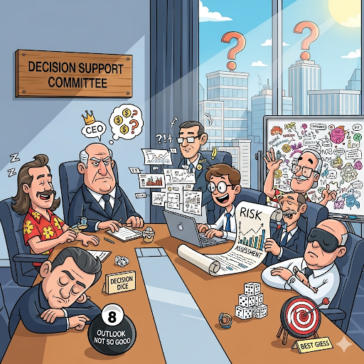

Slide 5 Governança Corporativa - C Level e Diretoria Executiva
5.2 1. O que são Comitês de Suporte à Decisão?

Os comitês de suporte à decisão são órgãos técnicos dentro de uma organização. Eles foram criados com um propósito muito claro: apoiar tecnicamente as deliberações do Conselho de Administração e as posições do Conselho Consultivo. Em essência, a função primordial desses comitês é amparar as decisões e deliberações do conselho de administração.
Segundo o Alexandre Di Miceli SILEVIRA (2010) “comitês de assessoramento do conselho de administração” (comitês de suporte a decisão)
” … são uma solução proposta pelos códigos de governança para melhorar o funcionamento dos conselhos de administração. A ideia fundamental é que conselheiros mais especializados ou interessados em certas matérias tenham mais tempo para se aprofundar em temas específicos, a fim de propiciar uma melhor tomada de decisão pelos conselhos … “
Livro Governança Corporativa no Brasil e no Mundo: Teoria e Prática - Alexandre Di Miceli da SILVEIRA
capítulo 9 - “O conselho de administração como mecanismo fundamental de governança” - introduz os Comitês de Assessoramento (comitês de suporte a decisão ) págs 121, 263-265
Alexandre Di Miceli Silveira cita 3 Comitês de Suporte a Decisão como os mais importantes:
Comitê de Auditoria: É considerado fundamental pelos principais códigos de governança. Suas atribuições incluem a interação com auditorias interna e externa, supervisão de decisões contábeis e de auditoria, participação na seleção do auditor independente, revisão da integridade das informações financeiras, avaliação da efetividade dos controles internos e gerenciamento de riscos, e revisão periódica da independência dos auditores;
Comitê de Remuneração/Recursos Humanos: Avalia a independência de consultorias de remuneração de executivos, e o sistema de remuneração dos executivos deve ser alinhado à criação de valor de longo prazo, considerando o controle de riscos;
Comitê de Nomeação/Governança Corporativa: Coordenar o processo de seleção e indicação do diretor-presidente e zelar pela adoção de boas práticas de governança
5.3 2. Características Principais
Esses comitês possuem algumas características distintivas:
- Natureza Técnica: Como mencionado, são órgãos com foco técnico, fornecendo expertise e análises aprofundadas sobre temas específicos.
- Flexibilidade de Duração: Podem ser permanentes ou temporários, adaptando-se às necessidades da organização. Um comitê permanente pode ser necessário para um tema de contínua relevância, enquanto um temporário pode ser formado para um projeto ou crise específica.
- Foco Ad Hoc: Normalmente, são “ad hoc”, o que significa que possuem foco em um determinado tema de análise. Isso permite que a organização mobilize especialistas para se debruçar sobre questões específicas sem sobrecarregar o conselho principal.
5.4 3. Exemplos de Comitês de Suporte à Decisão
Para ilustrar a variedade de temas que esses comitês podem abordar, a fonte nos oferece alguns exemplos:
- Comitê de riscos e crises: Focado na identificação, avaliação e mitigação de riscos, além de planejar respostas a situações de crise.
- Comitê de ética: Encarregado de zelar pelos princípios éticos da organização, investigando e propondo soluções para dilemas morais.
- Comitê de estratégia: Auxilia na formulação e revisão das estratégias da empresa, avaliando o ambiente de negócios e as oportunidades de crescimento.
- Comitê de novos negócios: Dedicado à análise de novas oportunidades de mercado, aquisições ou parcerias estratégicas.
5.5 Conclusão
Os Comitês de Suporte à Decisão são, portanto, ferramentas valiosas na governança corporativa. Eles agem como olhos e ouvidos técnicos do Conselho de Administração e do Conselho Consultivo, permitindo que a liderança tome decisões mais informadas e estratégicas, baseadas em análises detalhadas e especializadas. Sem esses comitês, a complexidade das decisões modernas poderia sobrecarregar os órgãos de governança, tornando o processo mais lento e menos eficaz. Eles são como grupos de consultores internos especializados que fornecem os dados e as análises necessárias para que os “capitães” da empresa (o Conselho) possam traçar o melhor rumo.
5.6 O que é C-Level?

- “C” vem de Chief → significa Chefe
- Refere-se aos cargos de alta liderança executiva
- Responsáveis por estratégia, decisões-chave e gestão global
- Exemplos: CEO, CFO, COO, CMO
| ASPECTO | Papel principal | Tomada de decisão | Relacionamento | Foco |
|---|---|---|---|---|
| C-LEVEL | Liderar a operação e garantir a execução da estratégia | Decisões operacionais e estratégicas de curto e médio prazo | Trabalha em sintonia com o Conselho, reportando resultados e desafios | Eficiência, inovação e crescimento da empresa |
| CONSELHO | Orientar a empresa e assegurar a visão de longo prazo | Decisões estratégicas e de governança, considerando a sustentabilidade do negócio | Atua como parceiro estratégico, oferecendo direcionamento | Proteção dos valores, interesses dos acionistas e continuidade do negócio |
5.7 Governança Corporativa e C-Level
- O Conselho de Administração define diretrizes
- O C-Level executa e operacionaliza
- Impactos principais:
- Transparência
- Responsabilidade
- Criação de valor para stakeholders
5.8 CEO (Chief Executive Officer) - Diretor Executivo
- Cargo mais alto da hierarquia executiva
- Define visão e estratégia
- Representa a empresa externamente
- Supervisiona os demais executivos
- Ex.: Satya Nadella (Microsoft), Tim Cook (Apple)
5.9 COO (Chief Operating Officer) - Diretor de Operações
- Braço direito do CEO
- Administra as operações diárias
- Garante a execução da estratégia
- Muitas vezes visto como sucessor natural do CEO
5.10 CFO (Chief Financial Officer) - Diretor Financeiro
- Gestor das finanças da empresa
- Responsável por:
- Planejamento e orçamento
- Controle de riscos
- Comunicação com investidores
- Papel central na sustentabilidade de longo prazo
5.11 CMO (Chief Marketing Officer) - Diretor de Marketing
- Foco em crescimento e mercado
- Lidera:
- Branding e comunicação
- Estratégias de vendas e marketing digital
- Responsável pela imagem e percepção da marca
5.12 CTO (Chief Technology Officer) - Diretor de Tecnologia e inovação
- Liderança e Estratégia Tecnológica: Define a visão e a estratégia tecnológica, alinhando-as com os objetivos de negócio da empresa para impulsionar a inovação e o crescimento;
- Desenvolvimento e Inovação: É responsável pelo desenvolvimento de novos produtos e serviços, aplicando tecnologias de ponta para criar vantagens competitivas;
- “Ponte” entre Negócios e Tecnologia: Atua como uma ponte entre a tecnologia e os objetivos estratégicos, traduzindo as necessidades do negócio em soluções tecnológicas eficazes
5.13 CIO - Diretor de Infraestrutura de TI
responsável por toda a área de TI de uma empresa. Seu objetivo é garantir o acesso às melhores e mais atuais tecnologias para tornar os sistemas da empresa cada vez mais produtivos e eficientes.
Seu papel é fundamental em tempos de digitalização e automação de processos por meio da tecnologia. Cabe ao Diretor de TI traçar estratégias para recursos e aplicações tecnológicas a fim de alcançar os resultados e objetivos da empresa.
produtos e serviços de TI (hardwares e softwares);
processamento e armazenamento de dados;
desenvolvimento de políticas de uso de dados;
construção ou aquisição de sistemas de apoio ao negócio;
criação de métricas e apuração dos resultados de performance;
padronização e integração dos processos da organização, como a comunicação interna;
5.14 Outros Cargos C-Level
- CHRO → Recursos Humanos e cultura
- CISO → Segurança da Informação
- CDO → Dados e transformação digital
5.15 C-Level em Ação
üìå Exemplo prático: queda de vendas
- CEO → Redefine estratégia geral
- CFO → Analisa impacto financeiro
- CMO → Cria campanha para reconquistar clientes
- COO → Ajusta operações
- CTO → Sugere soluções digitais
5.16 Fechamento
- C-Level = núcleo estratégico da empresa
- Cada cargo tem papel único
- O sucesso vem da coordenação entre Conselho + Executivos
5.17 Referências
ROSSETTI, José Paschoal; ANDRADE, Adriana. Governança Corporativa: Fundamentos, Desenvolvimento e Tendências. São Paulo: Atlas, 7. ed., 2014. p. s.p.
SILVEIRA, Alexandre Di Miceli da. Governança Corporativa no Brasil e no Mundo: Teoria e Prática. Rio de Janeiro: Elsevier, 2010.
ABDALA, Guilherme - https://einstitute.com.br/artigos/como-equilibrar-a-relacao-entre-o-c-level-e-o-conselho-em-empresas-familiares
5.19 Exercícios de Governança Corporativa — C-Level
| Questão 1 |
|---|
| Comitês de suporte à decisão têm como principal objetivo: |
| a) Executar a estratégia definida pelo CEO |
| b) Reduzir o número de conselheiros independentes |
| c) Apoiar tecnicamente as deliberações do Conselho de Administração |
| d) Substituir o Conselho Consultivo em decisões estratégicas |
| e) Realizar auditorias externas de forma independente |
| Questão 2 |
|---|
| De acordo com Silveira (2010), quais são os três comitês considerados mais importantes? |
| a) Ética, Estratégia e Novos Negócios |
| b) Auditoria, Remuneração/Recursos Humanos e Nomeação/Governança |
| c) Crises, Marketing e Operações |
| d) Inovação, Digitalização e Sustentabilidade |
| e) Planejamento, Comunicação e TI |
| Questão 3 |
|---|
| Qual característica distingue os Comitês de Suporte à Decisão? |
| a) Sempre possuem caráter permanente |
| b) Atuam sem vínculo com o Conselho de Administração |
| c) Possuem natureza técnica e foco especializado em determinados temas |
| d) São obrigatoriamente formados por membros externos à empresa |
| e) Substituem a diretoria executiva em crises |
| Questão 4 |
|---|
| O papel principal do C-Level é: |
| a) Garantir a visão de longo prazo da empresa |
| b) Liderar a operação e executar a estratégia |
| c) Representar os acionistas perante o mercado |
| d) Criar políticas de governança corporativa |
| e) Aprovar a remuneração de conselheiros |
| Questão 5 |
|---|
| O CEO (Chief Executive Officer) é responsável por: |
| a) Definir visão e estratégia da organização |
| b) Supervisionar a auditoria externa |
| c) Elaborar o sistema de remuneração dos executivos |
| d) Administrar unicamente operações financeiras |
| e) Gerenciar infraestrutura de TI |
| Questão 6 |
|---|
| Qual é o papel principal do COO? |
| a) Redefinir estratégias de longo prazo |
| b) Administrar operações diárias e garantir a execução da estratégia |
| c) Controlar os riscos financeiros da organização |
| d) Supervisionar diretamente o Conselho de Administração |
| e) Conduzir políticas de comunicação e marca |
| Questão 7 |
|---|
| Entre as funções do CFO estão: |
| a) Gestão da comunicação externa |
| b) Planejamento financeiro, orçamento e controle de riscos |
| c) Coordenação da seleção do CEO |
| d) Desenvolvimento de novos produtos e serviços |
| e) Criação de métricas de performance de TI |
| Questão 8 |
|---|
| O CMO é responsável principalmente por: |
| a) Controlar o orçamento anual da organização |
| b) Criar campanhas de marketing e gerenciar a imagem da marca |
| c) Liderar auditorias independentes |
| d) Supervisionar conselhos consultivos |
| e) Implementar políticas de remuneração de executivos |
| Questão 9 |
|---|
| O CTO (Chief Technology Officer) tem como papel central: |
| a) Planejar a sucessão do CEO |
| b) Representar os acionistas em assembleias |
| c) Definir visão tecnológica e impulsionar inovação alinhada aos objetivos do negócio |
| d) Elaborar políticas de remuneração |
| e) Conduzir comitês de ética |
| Questão 10 |
|---|
| Na relação entre Conselho de Administração e C-Level: |
| a) O Conselho define diretrizes e o C-Level executa e operacionaliza |
| b) O Conselho executa operações diárias e o C-Level define estratégias |
| c) Ambos têm papéis idênticos e intercambiáveis |
| d) O Conselho atua apenas em crises e o C-Level em operações rotineiras |
| e) O Conselho supervisiona apenas o marketing e o C-Level o financeiro |
5.19.1 Gabarito em Tabela
| Gabarito |
|---|
| 1. c) Apoiar tecnicamente as deliberações do Conselho de Administração |
| 2. b) Auditoria, Remuneração/Recursos Humanos e Nomeação/Governança |
| 3. c) Possuem natureza técnica e foco especializado em determinados temas |
| 4. b) Liderar a operação e executar a estratégia |
| 5. a) Definir visão e estratégia da organização |
| 6. b) Administrar operações diárias e garantir a execução da estratégia |
| 7. b) Planejamento financeiro, orçamento e controle de riscos |
| 8. b) Criar campanhas de marketing e gerenciar a imagem da marca |
| 9. c) Definir visão tecnológica e impulsionar inovação alinhada aos objetivos do negócio |
| 10. a) O Conselho define diretrizes e o C-Level executa e operacionaliza |
5.20 Exercícios de Governança Corporativa — Comitês de Suporte a Decisão
| Questão 1 |
| Qual é a função primordial dos Comitês de Suporte à Decisão, de acordo com o documento? |
| A) Executar e operacionalizar as diretrizes definidas pelo C-Level da empresa. |
| B) Substituir o Conselho de Administração em deliberações estratégicas complexas. |
| C) Amparar tecnicamente as decisões e deliberações do conselho de administração. |
| D) Gerenciar as operações diárias e garantir a execução da estratégia da empresa. |
| E) Representar a empresa externamente e supervisionar os demais executivos. |
| Questão 2 |
| Segundo Alexandre Di Miceli Silveira, citado no texto, quais são os 3 Comitês de Suporte à Decisão considerados os mais importantes? |
| A) Comitê de Riscos e Crises, Comitê de Ética e Comitê de Estratégia. |
| B) Comitê de Auditoria, Comitê de Remuneração/Recursos Humanos e Comitê de Nomeação/Governança Corporativa. |
| C) Comitê de Estratégia, Comitê de Novos Negócios e Comitê de Marketing. |
| D) Comitê de Tecnologia, Comitê de Segurança da Informação e Comitê de Dados. |
| E) Comitê de Auditoria, Comitê de Finanças e Comitê de Operações. |
| Questão 3 |
| Uma das características dos Comitês de Suporte à Decisão é a “Flexibilidade de Duração”. O que isso significa? |
| A) Que os comitês devem se reunir em horários flexíveis para acomodar os membros. |
| B) Que as decisões dos comitês podem ser alteradas a qualquer momento pelo C-Level. |
| C) Que os comitês podem ser permanentes ou temporários, adaptando-se às necessidades da organização. |
| D) Que os comitês possuem foco em diversos temas simultaneamente. |
| E) Que a composição dos membros do comitê é alterada constantemente. |
| Questão 4 |
| Qual das seguintes atribuições pertence ao Comitê de Auditoria? |
| A) Coordenar o processo de seleção e indicação do diretor-presidente. |
| B) Avaliar a independência de consultorias de remuneração de executivos. |
| C) Analisar novas oportunidades de mercado e parcerias estratégicas. |
| D) Avaliar a efetividade dos controles internos e gerenciamento de riscos. |
| E) Auxiliar na formulação e revisão das estratégias da empresa. |
| Questão 5 |
| O que significa a característica “Foco Ad Hoc” dos comitês de suporte? |
| A) Significa que eles possuem foco em um determinado tema de análise. |
| B) Significa que eles são sempre temporários e criados para crises. |
| C) Significa que não possuem natureza técnica, mas sim consultiva. |
| D) Significa que atuam de forma independente do Conselho de Administração. |
| E) Significa que são compostos por membros externos à organização. |